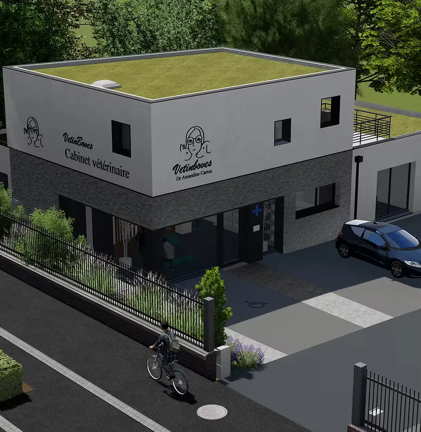
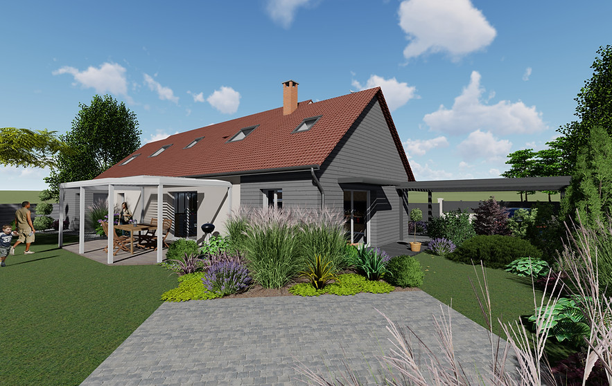
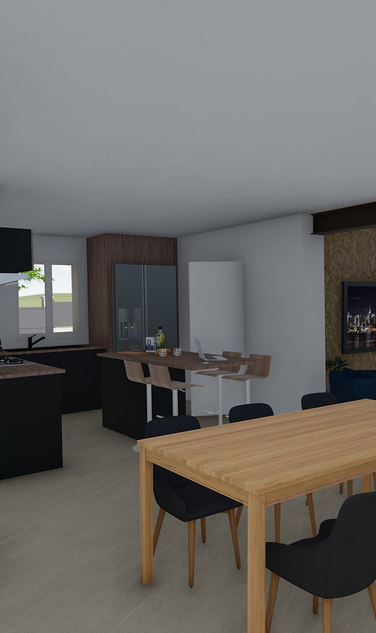
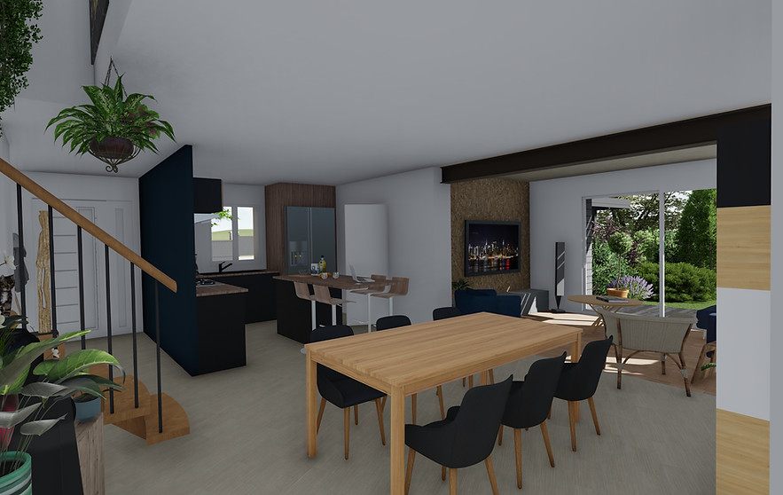
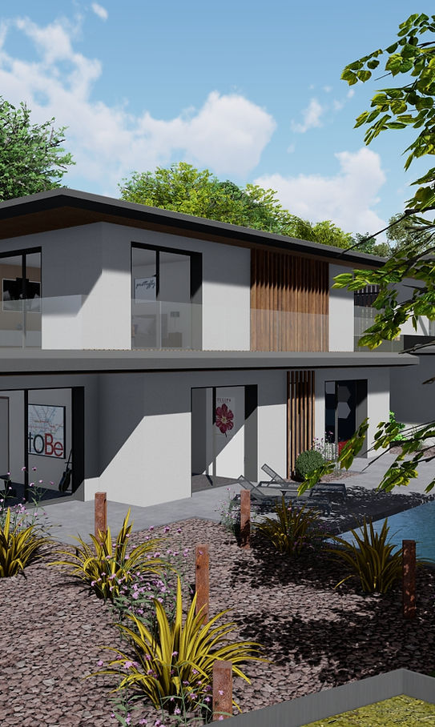

Ce qui fonctionne
Le visiteur comprend immédiatement le rôle de D-SIGN et la suite du parcours. La charte peut vivre dans des formulaires, devis et pages service.
Même entreprise, même contenu et même objectif de conversion. Chaque piste change la hiérarchie, la matière visuelle et le ton afin de choisir une charte avant d’écrire le thème WordPress.
Optimise la compréhension du rôle et des étapes. Compromis moins émotionnel qu’une direction très photographique.
D-SIGN accompagne particuliers et professionnels pour concevoir, chiffrer et coordonner leurs projets de rénovation, d’extension ou de construction.

Le visiteur comprend immédiatement le rôle de D-SIGN et la suite du parcours. La charte peut vivre dans des formulaires, devis et pages service.
Le langage du dossier peut devenir froid s’il n’est pas équilibré par des visages, de la matière et de vraies photos de chantier.
La priorité est de rassurer par la méthode et de rendre le métier lisible aux deux publics.
Optimise la confiance par les réalisations et une présence humaine. Compromis exige une vraie banque d’images cohérente.

Rendu publié · mission et lieu à confirmerD-SIGN accompagne particuliers et professionnels pour concevoir, chiffrer et coordonner leurs projets de rénovation, d’extension ou de construction.
La page ressemble à un travail d’architecture documenté, avec un ton chaleureux et régional. Elle donne envie de regarder les projets.
Sans photographies réelles, la promesse éditoriale s’effondre et les rendus 3D paraissent décoratifs.
D-SIGN peut organiser un shooting de réalisations, de chantiers et de l’équipe.
Optimise la preuve du changement et la double cible. Compromis dépend de couples avant/après réellement documentés.

Visuel avant · à fournir
Rendu publié · statut à confirmerD-SIGN accompagne particuliers et professionnels pour concevoir, chiffrer et coordonner leurs projets de rénovation, d’extension ou de construction.
Décrire mon projetLe bénéfice devient visible et le bleu historique reste reconnaissable. Les deux chemins répondent au brief sans couper la marque en deux.
Les visuels actuels ne constituent pas encore de vrais avant/après. Cette piste demande une collecte précise des archives projet.
L’entreprise dispose de photos prises aux mêmes étapes ou accepte de les documenter à l’avenir.
Optimise la mémorisation et la personnalité. Compromis direction plus polarisante, qui demande une exécution éditoriale stricte.
D-SIGN conçoit, chiffre et coordonne des projets de rénovation, d’extension et de construction.
Particuliers et professionnels · zone d’intervention à confirmer.

Le premier écran est immédiatement reconnaissable et ne ressemble pas aux homepages de rénovation observées. La bande devient un motif de marque réutilisable.
La très grande typographie peut dominer la preuve. Le rythme devra rester calme sur les pages de contenu.
La marque veut prendre une position plus créative tout en gardant un contenu très concret.
Choisissez sur le message et les contraintes de production, pas uniquement sur la palette.